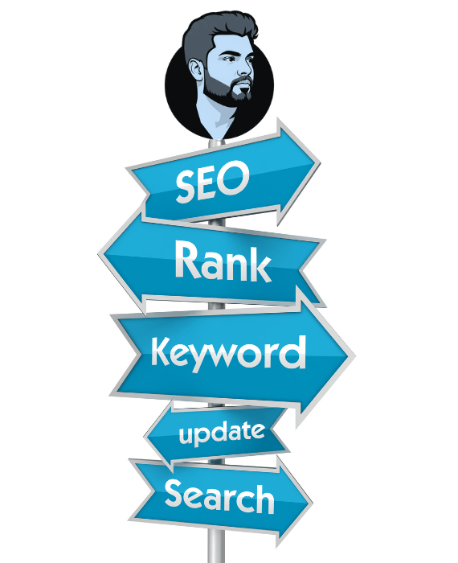

Leading provider of comprehensive SEO Service Sri Lanka, innovative GEO Service Sri Lanka, and ethical Local Link Building Service. Our proven strategies help Sri Lankan businesses achieve top rankings on Google and AI-powered search engines with transparent pricing and measurable results.
Comprehensive SEO Service Sri Lanka including technical SEO, on-page optimization, keyword research, content strategy, and monthly reporting. Achieve top rankings with our proven SEO services in Sri Lanka. Learn more about what is SEO or compare with other best SEO companies in Sri Lanka.
Cutting-edge GEO Service Sri Lanka for Generative Engine Optimization. Optimize your content for ChatGPT, Google Gemini, Claude, and other AI search engines. Be visible in the future of search with our GEO services. Explore our complete AI SEO guide for advanced strategies.
Ethical Local Link Building Service using white-hat techniques. Build high-quality backlinks from Sri Lankan websites to boost domain authority and improve your local search rankings effectively. Check our SEO price in Sri Lanka or consult with our SEO expert in Sri Lanka.
Advanced technical SEO as part of our SEO Service Sri Lanka including site speed optimization, mobile responsiveness, structured data implementation, and Core Web Vitals improvements for better rankings.
In-depth keyword research for SEO Service Sri Lanka targeting high-value local and national keywords. Identify opportunities to outrank competitors and capture qualified traffic for your business.
Dedicated support for all our SEO Service Sri Lanka, GEO Service Sri Lanka, and Local Link Building Service clients. Monthly performance reports with transparent metrics and continuous optimization.
Our integrated approach combines traditional SEO Service Sri Lanka with cutting-edge GEO Service Sri Lanka and strategic Local Link Building Service. We help Sri Lankan businesses dominate both traditional search engines and AI-powered search platforms with proven, data-driven strategies.
Top 3 Ranking Guarantee - Our SEO Service Sri Lanka has helped over 150+ Sri Lankan businesses achieve top 3 rankings on Google for their target keywords within 6 months. Proven track record with transparent reporting.
AI-Ready Optimization - Be ahead of the curve with our GEO Service Sri Lanka. Optimize your content for ChatGPT, Google Gemini, and Claude. Future-proof your online visibility with Generative Engine Optimization strategies.
White-Hat Link Building - Our Local Link Building Service uses only ethical, Google-approved techniques. Build high-quality backlinks from reputable Sri Lankan websites to boost your domain authority and search rankings safely.

All professional SEO services by Buddhika S Weerasekara — SEO expert with 15+ years experience
Sri Lanka's #1 SEO consultant. White-hat SEO, GEO & sustainable SEO growth.
Direct, transparent SEO service. 15+ years experience, measurable results.
Professional SEO company in Sri Lanka serving all 9 provinces since 2010.
Full SEO service: on-page, technical, link building & GEO optimization.
Expert SEO across Sri Lanka. White-hat, technical & local SEO for all businesses.
Certified SEO specialist. E-E-A-T compliant, data-driven SEO strategies.
Full-service SEO agency in Sri Lanka. Digital marketing & SEO solutions.
SEO expert with 15+ years hands-on SEO experience in Sri Lanka.
GEO optimization for ChatGPT, Gemini & Perplexity AI search visibility.
Transparent, affordable SEO packages with stronger search visibility.
Book a free SEO consultation today.